¿Qué pasa con la señal del transductor cuando es recibida por el colector de datos?
Procesamiento de Señal
Procesamiento de Señal
Proceso de la señal1
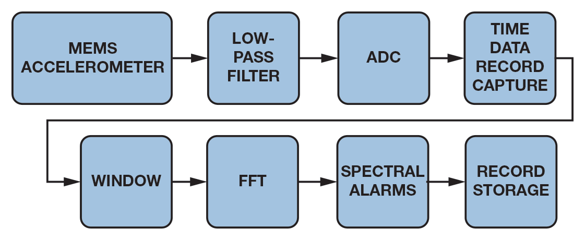
Filtros
Filtros
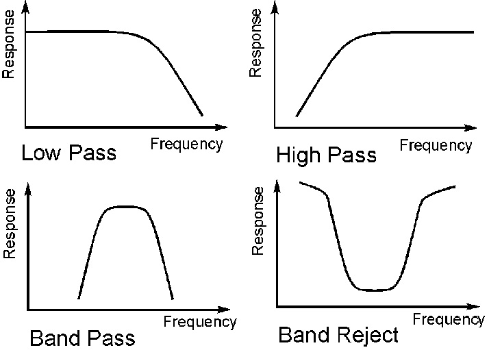
Frecuencia de muestreo (Sample Rate)
Frecuencia de muestreo (Sample Rate)
Se hacen muestras indivuales a intervalos discretos. La frecuencia en la que la onda se muestrea se llama Frecuencia de muestreo. Su unidad es Samples/S
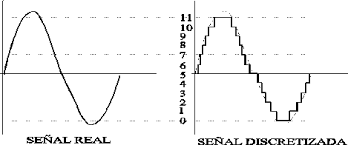
Frecuencia de muestreo - FMAX
Frecuencia de muestreo - FMAX
Si queremos detectar una frecuencia maxima de interes (FMAX), la frecuencia de muestreo debe ser por lo menos el doble de la FMAX. El modulo Dynamix toma este factor como 2.28
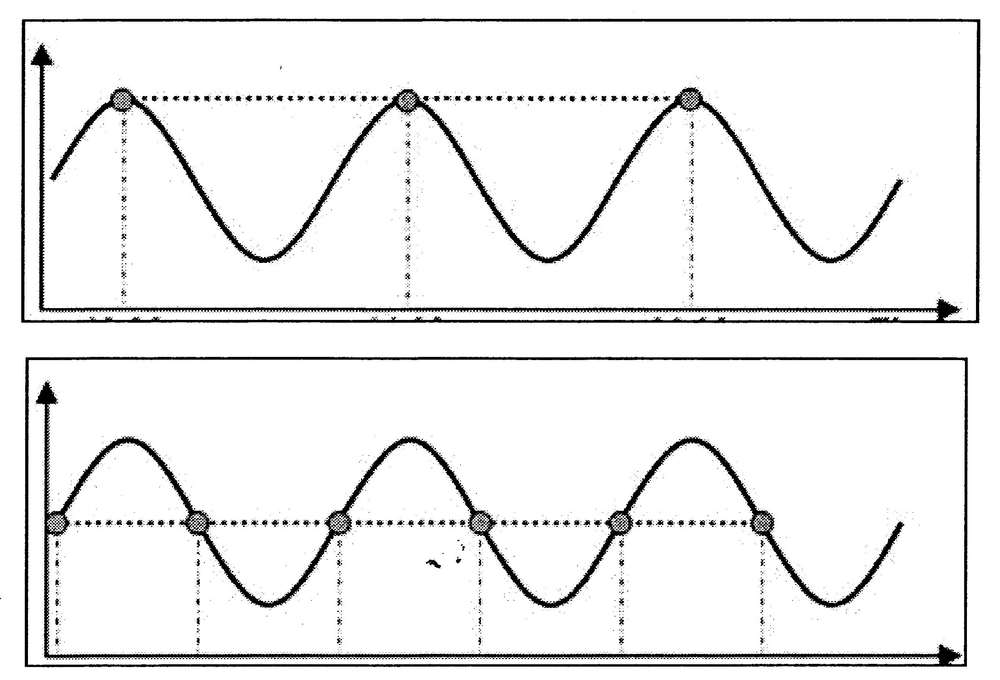
Numero de muestras - Líneas de Resolución
Numero de muestras - Líneas de Resolución
Existe otra relación que vincula la onda y el espectro.
El número de muestras de la onda de tiempo determina el espesor o la resolución del espectro.
El espesor o resolución esta determinado por el número de líneas. A este número se le conoce como Líneas de Resolución o LOR.
Numero de muestras - Líneas de Resolución
Numero de muestras - Líneas de Resolución
2 frecuencias cuya separación entre ellas es menor a la resolución del espectro no podran distinguirse en el espectro.
El número de muestras es 2.28 veces el número de líneas para el modulo Dynamix.
Frecuencia de muestreo - Numero de muestras
Frecuencia de muestreo - Numero de muestras
Podemos controlar 2 parámetros: la frecuencia de muestreo y el número total de muestras recolectadas. La frecuencia de muestreo se controla seleccionando el Fmax. El numero de muestras se define por medio de líneas de resolución.
El tiempo que se necesita para recolectar los datos es igual al número de muestras que se requiere, dividido entre la frecuencia de muestreo.
Ventana
Ventana
El FFT se realiza en un bloque de muestras llamado registro de tiempo.
El FFT requiere que el registro de tiempo sea continuo. El calculo del FFT "asume" que los datos continúan infinitamente antes y despues de este bloque de datos.
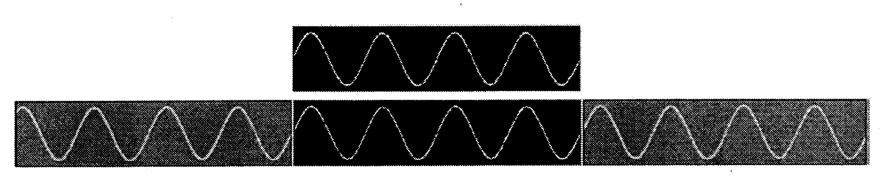
Ventana
Ventana
Rara vez es cierto que el registro de tiempo empieza y termina en un mismo valor.
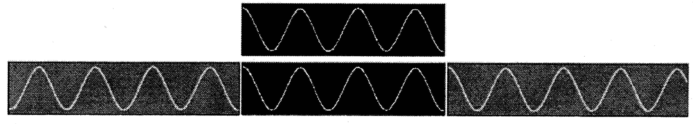
Ventana
Ventana
Cuando el calculo FFT se realiza a una señal discontinua: Parece tener un incremento de paso en la amplitud (simulando un choque) generando un ensanchamiento de los picos dentro del espectro.1
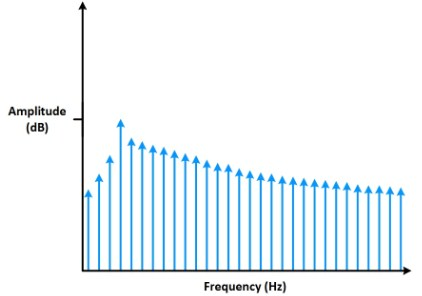
Ventana
Ventana
Para minimizar este problema, se varía el registro de tiempo a fin de que los bordes son empujados a un valor fijo sin modificar el contenido de frecuencia.
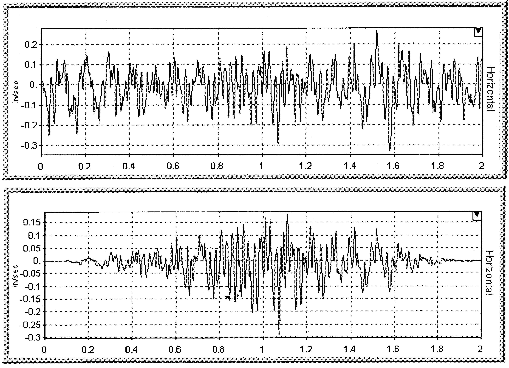
Promediado
Promediado
La vibración siempre cambia ligeramente y aparece ruido en las señales. Para recudir estos efectos, se aplica un promediado que ayuda a mantener la repetitividad. Usualmente un promedio de 4 señales.
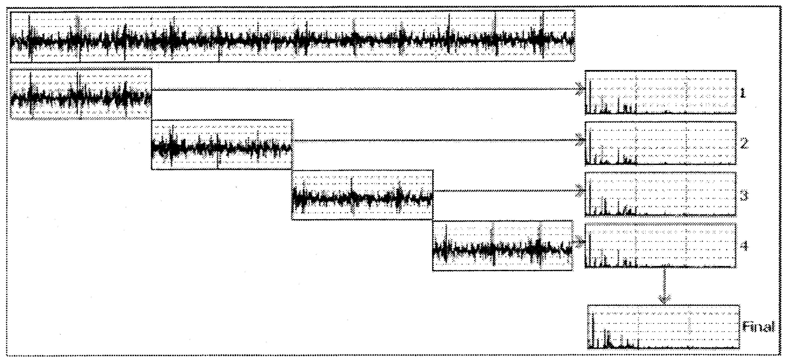
Analisis Vibracional como proceso
Analisis Vibracional como proceso
Analisis Vibracional como proceso
Analisis Vibracional como proceso
En esta sesión nos centraremos en como revisar los datos de vibración con el fin de determinar si existe un problema.
El analisis de cada una de las mediciones y su posterior comparación puede llegar a ser abrumadora. Haria falta mucho tiempo, nivel de concentración y perseverancia.
Necesitamos describir un metodo que permita evitar la perdida de pistas de cruciales en la detección de problemas. (Existen muchos casos donde se recopilan datos pero no se llega a detectar fallas en su debido momento ocasionando grandes perdidas)
La piramide
La piramide
La forma de la piramide representa el número de máquinas involucradas en cada fase (no representa el tiempo, esfuerzo, importancia o habilidades requeridas)

La piramide
La piramide
El objetivo debe ser dejar atras la base de la piramide tan rápido como te sea posible, para pasar mas tiempo en la cima:
- Diagnosticando fallos
- Determinando caminos para evitar futuras fallas
- Verificando reparaciones.
Fase de Detección
Fase de Detección
Informe de Excepción
Informe de Excepción
La mayoria de los sofwares de vibración generan reportes de excepción.
El sofware escanea todas las medidas de vibración, las compara con limites de alarma, opcionalmente contra lecturas previas, y entonces genera una lista de máquinas con los resultados.
Los resultados del informe indicarán que máquinas fallas, asi como su severidad y nivel de excedencia (% o dB).
Límites de Alarma
Límites de Alarma
Al tener una nueva lectura, uno de los mayores retos es saber cuales deberian ser los niveles de alarmas
¿En que punto se recomienda reparación? ¿En qué punto debo preocuparme y hacer un mayor seguimiento a una maquina?
Los niveles de referencia son dictados por muchos factores. El tamaño de máquina, la criticidad, la carga a la que esta sometida y el historial son muy importantes.
Límites de Alarma
Límites de Alarma
Hay dos maneras de fijar un nivel de alarma.
- Recurrir a límites publicados y fijados.
- A partir de las lecturas de vibración existentes, realizar un cálculo para llegar al valor del límite.
Limites publicados y fijados
Limites publicados y fijados
Durante muchos años se ha intentado tabular todo tipo de máquinas y los correspondientes niveles de vibración.
Estos intentos han sido llevados a cabo por distribuidores de sofware, compañias y organizaciones similares.
El resultado son las siguientes tablas:
ISO 10816 (RMS de 10 z a 1000Hz)
ISO 10816 (RMS de 10 z a 1000Hz)

{kind=link}

Limites publicados y fijados
Limites publicados y fijados
Teniendo en cuenta que todas las máquinas son diferentes (operan bajo diferentes cargas, estan montadas de diferente manera, diferente fabricación, etc), incluso en aquellas que son similares, aplicar limites publicados y fijados puede llevarnos a desechar maquinas en buen estado o a sobrexigirlas cuando su estado no es el adecuado.
Se recomienda comenzar con limites publicados, y después de que hayan sido tomadas varias lecturas, pasar a limites calculados. Para esto tiene que pasar bastante tiempo para tener una buena idea de la condición de la máquina.
Limites calculados
Limites calculados
Basándonos en la afirmación, de que una máquina tiene problemas si sus niveles de vibración superan el doble de los niveles saludables, podemos trazar una linea base y fijar ahi los límites.
Una linea base es una medida ideal que creemos que mejor representa cómo debieria vibrar la máquina. Es una medida que podemos usar para comparar, con el fin de determinar si ha ocurrido algún cambio.
Limites calculados
Limites calculados
Existen estrategias para determinar la linea base:
- Tomar la primera serie de datos recogidos y establecer la linea base al doble de estos valores.
- Tomar una lectura después de que la máquina haya sido reparada/reacondicionada (y despues de que haya tenido la oportunidad de operar) y fijar la línea base al doble de estos valores
- Calculos estadísticos (vibracion fuera de su variacion normal 2-sigma o 3-sigma se considera en alerta para observación).
Tecnicas de detección
Tecnicas de detección
Sea cual sea la estrategia para obetenr los limites de alarma, existen diversos metodos o técnicas de detección:
- Alarmas de banda.
- Alarmas Envolventes.
- Sistemas Expertos.
- Sistemas de Inteligencia Artificial.
Alarmas de banda (Alarmas Espectrales)
Alarmas de banda (Alarmas Espectrales)
Se calcula el valor de vibracion (RMS, promedio, pk o pk-pk) en un rango de frecuencias que contengan picos caracteristicos y se comprueba sí exceden limites.

Alarmas en envolvente (Alarma de máscara)
Alarmas en envolvente (Alarma de máscara)
El limite de alarma se aplica al espectro completo, en vez de fraccionario en bandas. Potencialmente más sensible a los picos que puedan aparecer a frecuencias inesperadas pero con un informe de excepción no tan espefico.

Sistemas Expertos
Sistemas Expertos
Un sistema expero es un sofware que es capaz de tomar datos de entrada y proveer información util de sálida. En la mayoria de los casos, el proceso requiere realizar cálculos, y tomar decisiones.
Un sistema experto esta diseñado por un ingeniero del conocimiento en base a los conocimientos de un profesional experto proporcionando ayuda a personas con poca experiencia para resolver problemas que requieren un "conocimiento formal especializado"
Un sistema experto esta diseñado alrededor de reglas. Por ejemplo Si la vibración a 1X es alta en vertical y horizontal, y no tan alta en axial y la vibracion a 2X no es alta, tenemos un desequilibrio
Sistemas Expertos
Sistemas Expertos
Los sistemas expertos, cuando se configuran correctamente, son capaces de filtrar información, y en algunos casos proveer diagnóstico y recomendaciones.

Sistemas de Inteligencia Artificial
Sistemas de Inteligencia Artificial
Los obetivos son los mismo que los del sistema experto; revisar datos de vibración y realizar un diagnóstico. SIn embargo los sistemas AI (o redes neuronales) trabajan de diferente manera a los sistemas exertos.
Los sistemas expertos estan diseñados sobre unas reglas. Los sistemas AI aprenden o desarrollan sus propias reglas.
Alimentas con una serie de datos e indicas que significan. Proceso repetitivo.
Caso Especial: Velocidad y carga variable
Caso Especial: Velocidad y carga variable
Cuando la velocidad de la máquina varía (o la carga), los nivel de vibración tambien cambian. Tambien cambia el valor de las frecuencias que no estan relacionadas a la velocidad de maquina) como resonancia, fuentes externas de vibración, problemas electricos, etc.
Si no puedes controlar la velocidad de máquina, configura diferentes máquinas (Bomba-A 1000RPM y Bomba-A 1200RPM), y aplica diferentes límites de alarma para cada una.
Fase de Análisis
Fase de Análisis
Fase de Análisis
Fase de Análisis
Desafortunadamente, el informe de excepción puede marcar incorrectamente una máquina con un aviso de un posible problema.
Puede que los límites de alarma no están fijados correctamente.
Algun cambio en la velocidad o en la carga, ruido externo puede generar una falsa alarma.
Fallos en el sensor
Fallos en el sensor
El problema más comun es tener fallos relacionado con el sensor. Un clasico "ski-slope" es un indicador de problema con el sensor.
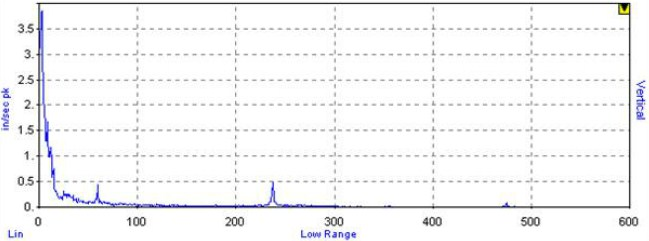
Picos en el espectro
Picos en el espectro
El espectro debera contener picos. Deberas asegurarte de que exista información sobre el estado mecánico de la máquina.
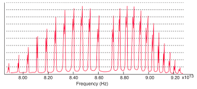
¿Son las condiciones de medida correctas?
¿Son las condiciones de medida correctas?
Asumiendo que los datos parecen limpios, se deben hacer las siguiente preguntas:
- ¿Estaba la maquína funcionando bajo las condiciones correctas?
- ¿Puede identificarse el picio a la velocidad de giro?
- ¿Estaba funcionando a la velocidad correcta?
Se tendra que reconocer que los datos son diferentes o bien compararlos con datos anteriores (Continuidad)
Tendencias
Tendencias
Lo siguiente es revisar tendencias de valores escalares.
Estos valores escalares podran ser medidos o calculados.
Los datos medidos incluyen lecturas de nivel global, medidas de alta frecuencia en los apoyos (HFD, spike energy en unidades gSE), e incluso datos del proceso (temperatura, presión, etc)
Los datos calculados vendran habitualmente de las bandas. Tendencias en las bandas a 1X y 2X podrán ser muy útiles.
Tendencias
Tendencias
Al ver una tendencia, la primera cosa que debemos buscar es un cambio en el nivel de amplitud, y el nivel de relativo de las alarmas prefijadas.
Si la tendencia es practicamente plana, entonces puedes confiar en que no existe un problema potencial, por lo tanto, no es necesario continua con el análisis.
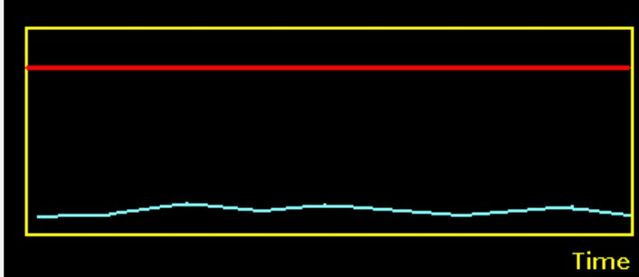
Tendencias
Tendencias
Sin embargo, si una tendencia muestra un incremento en el nivel a lo largo del tiempo, y los niveles exceden los límites de alarma, entonces se deberá prestar más atención.
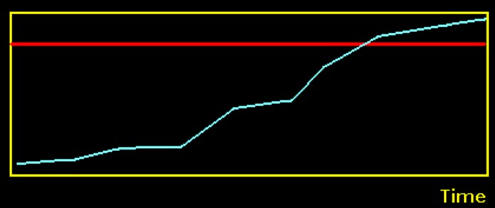
Tendencias
Tendencias
Si los límites no han sido excedidos, se debe mirar la velocidad de crecimiento de la tendencia, e intentar estimar cuando se alcanzaran los límites de alarma y la severidad del problema.
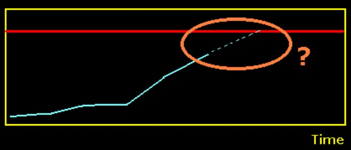
Fase de analisis
Fase de analisis
Una vez que haz repasado los datos de tendencia, en particular los datos que fueron resaltados por el informe de excepción, queda mirar detalladamente el espectro y la onda.
Esta información, junto con los conocimientos de la máquina y el proceso (demanda de producción, disponibilidad de recambios), resultara en una decisión.
Graciasˊ・ω・ˋ